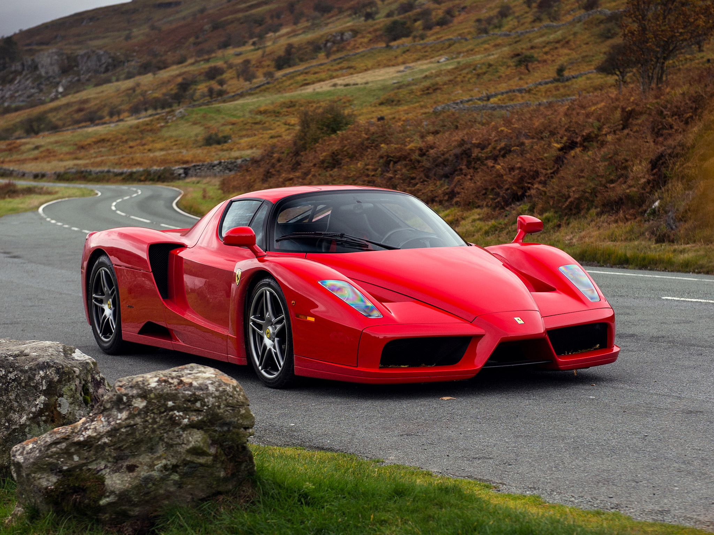

Maranello · Italy1947 · Maranello
The first Ferrari
The 125 S became the first car to carry Enzo Ferrari’s name. On 11 May 1947, it made its racing debut at Piacenza, beginning a story built on competition.
04 / Heritage
From a small workshop in Maranello to the world’s greatest circuits. Explore the moments that shaped Ferrari.
A legacy in motion
Choose an era · swipe to see more

Maranello · Italy1947 · Maranello
The 125 S became the first car to carry Enzo Ferrari’s name. On 11 May 1947, it made its racing debut at Piacenza, beginning a story built on competition.
An independent tribute. Milestones selected for this experience.